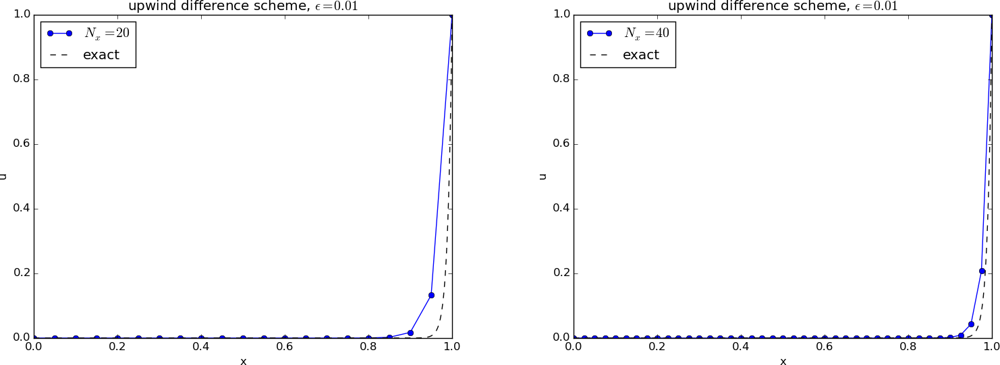

Advection-dominated equations
Wave (the chapter Wave equations) and diffusion (the chapter Diffusion equations) equations are solved reliably by finite difference methods. As soon as we add a first-order derivative in space, representing *advective transport, also known as convective transport, the numerics gets more complicated, and intuitively attractive methods no longer work well. We shall show how and why such methods fail and provide remedies. The present chapter builds on basic knowledge about finite difference methods for diffusion and wave equations, including the analysis by Fourier components, truncation error analysis ( Appendix: Truncation error analysis), and compact difference notation.
Much more comprehensive discussion of dispersion analysis for advection problems can be found in the book by Duran [15]. This is a an excellent resource for further studies on the topic of advection PDEs, with emphasis on generalizations to real geophysical problems. The book by Fletcher [16] also has a good overview of methods for advection and convection problems.
One-dimensional time-dependent advection equations
We consider the pure advection model $$ \begin{align} \frac{\partial u}{\partial t} + v\frac{\partial u}{\partial x} &= 0,\quad & x\in (0,L),\ t\in (0,T], \tag{4.1}\\ u(x,0) &= I(x),& x\in (0,L), \tag{4.2}\\ u(0,t) &= U_0,& t\in (0,T]. \tag{4.3} \end{align} $$ In (4.1), \( v \) is a given parameter, typically reflecting the velocity of transport of a quantity \( u \) with a flow. There is only one boundary condition (4.2) since the spatial derivative is only first order in the PDE (4.1). The information at \( x=0 \) and the initial condition get transported in the positive \( x \) direction if \( v>0 \) through the domain.
It is easiest to find the solution of (4.1) if we remove the boundary condition and consider a process on the infinite domain \( (-\infty, \infty) \). The solution is simply $$ \begin{equation} u(x,t) = I(x-vt)\tp \tag{4.4} \end{equation} $$ This is also the solution we expect locally in a finite domain before boundary conditions have reflected or modified the wave.
A particular feature of the solution (4.4) is that $$ \begin{equation} u(x_i, t_{n+1}) = u(x_{i-1}, t_n), \tag{4.5} \end{equation} $$ if \( x_i=i\Delta x \) and \( t_n=n\Delta t \) are points in a uniform mesh. We see this relation from $$ u(i\Delta x, (n+1)\Delta t) = I(i\Delta x - v(n+1)\Delta t) = I((i-1)\Delta x - vn\Delta t - v\Delta t - \Delta x) = I((i-1)\Delta x - vn\Delta t) = u((i-1)\Delta x, n\Delta t),$$ provided \( v = \Delta x/\Delta t \). So, whenever we see a scheme that collapses to $$ \begin{equation} u^{n+1}_i = u_{i-1}^n, \tag{4.6} \end{equation} $$ for the PDE in question, we have in fact a scheme that reproduces the analytical solution, and many of the schemes to be presented possess this nice property!
Finally, we add that a discussion of appropriate boundary conditions for the advection PDE in multiple dimensions is a challenching topic beyond the scope of this text.
Simplest scheme: forward in time, centered in space
Method
A first attempt to solve a PDE like (4.1) will normally be to look for a time-discretization scheme that is explicit so we avoid solving systems of linear equations. In space, we anticipate that centered differences are most accurate and therefore best. These two arguments lead us to a Forward Euler scheme in time and centered differences in space: $$ \begin{equation} [D_t^+ u + vD_{2x} u = 0]^n_i \tag{4.7} \end{equation} $$ Written out, we see that this expression reads $$ u^{n+1} = u^n - \half C (u^n_{i+1}-u_{i-1}^n),$$ with \( C \) as the Courant number $$ C = \frac{v\Delta t}{\Delta x}\tp$$
Implementation
A solver function for our scheme goes as follows.
import numpy as np
import matplotlib.pyplot as plt
def solver_FECS(I, U0, v, L, dt, C, T, user_action=None):
Nt = int(round(T/float(dt)))
t = np.linspace(0, Nt*dt, Nt+1) # Mesh points in time
dx = v*dt/C
Nx = int(round(L/dx))
x = np.linspace(0, L, Nx+1) # Mesh points in space
# Make sure dx and dt are compatible with x and t
dx = x[1] - x[0]
dt = t[1] - t[0]
C = v*dt/dx
u = np.zeros(Nx+1)
u_n = np.zeros(Nx+1)
# Set initial condition u(x,0) = I(x)
for i in range(0, Nx+1):
u_n[i] = I(x[i])
if user_action is not None:
user_action(u_n, x, t, 0)
for n in range(0, Nt):
# Compute u at inner mesh points
for i in range(1, Nx):
u[i] = u_n[i] - 0.5*C*(u_n[i+1] - u_n[i-1])
# Insert boundary condition
u[0] = U0
if user_action is not None:
user_action(u, x, t, n+1)
# Switch variables before next step
u_n, u = u, u_n
Test cases
The typical solution \( u \) has the shape of \( I \) and is transported at velocity \( v \) to the right (if \( v>0 \)). Let us consider two different initial conditions, one smooth (Gaussian pulse) and one non-smooth (half-truncated cosine pulse): $$ \begin{align} u(x,0) &= Ae^{-\half\left(\frac{x-L/10}{\sigma}\right)^2}, \tag{4.8}\\ u(x,0) &= A\cos\left(\frac{5\pi}{L}\left( x - \frac{L}{10}\right)\right),\quad x < \frac{L}{5} \hbox{ else } 0\tp \tag{4.9} \end{align} $$ The parameter \( A \) is the maximum value of the initial condition.
Before doing numerical simulations, we scale the PDE problem and introduce \( \bar x = x/L \) and \( \bar t= vt/L \), which gives $$ \frac{\partial\bar u}{\partial \bar t} + \frac{\partial\bar u}{\partial\bar x} = 0\tp$$ The unknown \( u \) is scaled by the maximum value of the initial condition: \( \bar u = u/\max |I(x)| \) such that \( |\bar u(\bar x, 0)|\in [0,1] \). The scaled problem is solved by setting \( v=1 \), \( L=1 \), and \( A=1 \). From now on we drop the bars.
To run our test cases and plot the solution, we make the function
def run_FECS(case):
"""Special function for the FECS case."""
if case == 'gaussian':
def I(x):
return np.exp(-0.5*((x-L/10)/sigma)**2)
elif case == 'cosinehat':
def I(x):
return np.cos(np.pi*5/L*(x - L/10)) if x < L/5 else 0
L = 1.0
sigma = 0.02
legends = []
def plot(u, x, t, n):
"""Animate and plot every m steps in the same figure."""
plt.figure(1)
if n == 0:
lines = plot(x, u)
else:
lines[0].set_ydata(u)
plt.draw()
#plt.savefig()
plt.figure(2)
m = 40
if n % m != 0:
return
print 't=%g, n=%d, u in [%g, %g] w/%d points' % \
(t[n], n, u.min(), u.max(), x.size)
if np.abs(u).max() > 3: # Instability?
return
plt.plot(x, u)
legends.append('t=%g' % t[n])
if n > 0:
plt.hold('on')
plt.ion()
U0 = 0
dt = 0.001
C = 1
T = 1
solver(I=I, U0=U0, v=1.0, L=L, dt=dt, C=C, T=T,
user_action=plot)
plt.legend(legends, loc='lower left')
plt.savefig('tmp.png'); plt.savefig('tmp.pdf')
plt.axis([0, L, -0.75, 1.1])
plt.show()
Bug?
Running either of the test cases, the plot becomes a mess, and
the printout of \( u \) values in the plot function reveals that
\( u \) grows very quickly. We may reduce \( \Delta t \) and make it
very small, yet the solution just grows.
Such behavior points to a bug in the code.
However, choosing a coarse mesh and performing a time step by
hand calculations produce the same numbers as in the code, so
it seems that the implementation is correct.
The hypothesis is therefore that the solution is unstable.
Analysis of the scheme
It is easy to show that a typical Fourier component $$ u(x,t)= B\sin (k(x-ct))$$ is a solution of our PDE for any spatial wave length \( \lambda = 2\pi /k \) and any amplitude \( B \). (Since the PDE to be investigated by this method is homogeneous and linear, \( B \) will always cancel out, so we tend to skip this amplitude, but keep it here in the beginning for completeness.)
A general solution can be thought to be build of a collection of long and short waves such waves with different amplitudes. Algebraically, the work simplifies if we introduce the complex Fourier component $$ u(x,t)=\Aex^n e^{ikx},$$ with $$ \Aex=Be^{-ikv\Delta t} = Be^{iCkx}\tp$$ Note that \( |\Aex| \leq 1 \).
It turns out that many schemes also allow a Fourier wave component as solution, and we can use the numerically computed values of \( \Aex \) (denoted \( A \)) to learn about the quality of the scheme. Hence, to analyze the difference scheme we just have implemented, we look at how it treats the Fourier component $$ u_q^n = A^n e^{ikq\Delta x}\tp$$
Inserting the numerical component in the scheme, $$ [D_t^+ A^n e^{ikq\Delta x} + v D_{2x}A^n e^{ikq\Delta x}]^n_i,$$ and making use of (6.25) results in $$ [e^{ikq\Delta x} (\frac{A-1}{\Delta t} + v\frac{1}{\Delta x}i\sin (k\Delta x))]^n_i,$$ which implies $$ A = 1 - iC\sin(k\Delta x)\tp$$ The numerical solution features the formula \( A^n \). To find out whether \( A^n \) means growth in time, we rewrite \( A \) in polar form: \( A=A_re^{i\phi} \), for real numbers \( A_r \) and \( \phi \), since we then have \( A^n = A_r^ne^{i\phi n} \). The magnitude of \( A^n \) is \( A_r^n \). In our case, \( A_r = (1 + C^2\sin^2(kx))^{1/2} > 1 \), so \( A_r^n \) will increase in time, whereas the exact solution will not. Regardless of \( \Delta t \), we get unstable numerical solutions.
Leapfrog in time, centered differences in space
Method
Another explicit scheme is to do a "leapfrog" jump over \( 2\Delta t \) in time and combine it with central differences in space: $$ [D_{2t} u + vD_{2x} u = 0]_i^n,$$ which results in the updating formula $$ u^{n+1}_i = u^{n-1}_i - C^2(u_{i+1}^n-u_{i-1}^n)\tp$$ A special scheme is needed to compute \( u^1 \), but we leave that problem for now.
Implementation
We now need to work with three time levels and must modify our solver a bit:
Nt = int(round(T/float(dt)))
t = np.linspace(0, Nt*dt, Nt+1) # Mesh points in time
...
u = np.zeros(Nx+1)
u_1 = np.zeros(Nx+1)
u_2 = np.zeros(Nx+1)
...
for n in range(0, Nt):
if scheme == 'UP':
for i in range(1, Nx):
u[i] = u_1[i] - 0.5*C*(u_1[i+1] - u_1[i-1])
elif scheme == 'LF':
if n == 0:
# Use some scheme for the first step
for i in range(1, Nx):
...
else:
for i in range(1, Nx+1):
u[i] = u_2[i] - C*(u_1[i] - u_1[i-1])
# Switch variables before next step
u_2, u_1, u = u_1, u, u_2
Running a test case
Let us try a coarse mesh such that the smooth Gaussian initial condition is represented by 1 at mesh node 1 and 0 at all other nodes. This triangular initial condition should then be advected to the right. Choosing scaled variables as \( \Delta t=0.1 \), \( T=1 \), and \( C=1 \) gives the plot in Figure 58, which is in fact identical to the exact solution (!).
Figure 58: Exact solution obtained by Leapfrog scheme with \( \Delta t = 0.1 \) and \( C=1 \).

Running more test cases
We can run two types of initial conditions for \( C=0.8 \): one very smooth with a Gaussian function (Figure 61) and one with a discontinuity in the first derivative (Figure 62). Unless we have a very fine mesh, as in the left plots in the figures, we get small ripples behind the main wave, and this main wave has the amplitude reduced.
Figure 59: Advection of a Gaussian function with a leapfrog scheme and \( C=0.8 \), \( \Delta t = 0.001 \) (left) and \( \Delta t=0.01 \) (right).

Advection of a Gaussian function with a leapfrog scheme and \( C=0.8 \), \( \Delta t = 0.01 \).
Advection of a Gaussian function with a leapfrog scheme and \( C=0.8 \), \( \Delta t = 0.001 \).
Figure 60: Advection of half a cosine function with a leapfrog scheme and \( C=0.8 \), \( \Delta t = 0.001 \) (left) and \( \Delta t=0.01 \) (right).

Advection of half a cosine function with a leapfrog scheme and \( C=0.8 \), \( \Delta t = 0.01 \).
Advection of half a cosine function with a leapfrog scheme and \( C=0.8 \), \( \Delta t = 0.001 \).
Analysis
We can perform a Fourier analysis again. Inserting the numerical Fourier component in the Leapfrog scheme, we get $$ A^2 - i2C\sin(k\Delta x) A - 1 = 0,$$ and $$ A = -iC\sin(k\Delta x) \pm \sqrt{1-C^2\sin^2(k\Delta x)}\tp$$ Rewriting to polar form, \( A=A_re^{i\phi} \), we see that \( A_r=1 \), so the numerical component is neither increasing nor decreasing in time, which is exactly what we want. However, for \( C>1 \), the square root can become complex valued, so stability is obtained only as long as \( C\leq 1 \).
We introduce \( p=k\Delta x \). The amplification factor now reads $$ A = -iC\sin p \pm \sqrt{1-C^2\sin^2 p},$$ and is to be compared to the exact amplification factor $$ \Aex = e^{-ikv\Delta t} = e^{-ikC\Delta x} = e^{-iCp}\tp$$ the section Analysis of dispersion relations compares numerical amplification factors of many schemes with the exact expression.
Upwind differences in space
Since the PDE reflects transport of information along with a flow in positive \( x \) direction, when \( v>0 \), it could be natural to go (what is called) upstream and not downstream in a spatial derivative to collect information about the change of the function. That is, we approximate $$ \frac{\partial u}{\partial x}(x_i,t_n)\approx [D^-_x u]^n_i = \frac{u^n_{i} - u^n_{i-1}}{\Delta x}\tp$$ This is called an upwind difference (the corresponding difference in the time direction would be called a backward difference, and we could use that name in space too, but upwind is the common name for a difference against the flow in advection problems). This spatial approximation does magic compared to the scheme we had with Forward Euler in time and centered difference in space. With an upwind difference, $$ \begin{equation} [D^+_t u + vD^-_x u = 0]^n_i, \tag{4.10} \end{equation} $$ written out as $$ u^{n+1} = u^n_i - C(u^{n}_{i}-u^{n}_{i-1}),$$ gives a generally popular and robust scheme that is stable if \( C\leq 1 \). As with the Leapfrog scheme, it becomes exact if \( C=1 \), exactly as shown in Figure 58. This is easy to see since \( C=1 \) gives the property (4.6). However, any \( C < 1 \) gives a significant reduction in the amplitude of the solution, which is a purely numerical effect, see Figures 61 and 62. Experiments show, however, that reducing \( \Delta t \) or \( \Delta x \), while keeping \( C \) reduces the error.
Figure 61: Advection of a Gaussian function with a forward in time, upwind in space scheme and \( C=0.8 \), \( \Delta t = 0.001 \) (left) and \( \Delta t=0.01 \) (right).

Forward in time, upwind in space, \( C=0.8 \), \( \Delta t = 0.01 \).
Forward in time, upwind in space, \( C=0.8 \), \( \Delta t = 0.005 \).
Figure 62: Advection of half a cosine function with a forward in time, upwind in space scheme and \( C=0.8 \), \( \Delta t = 0.01 \) (left) and \( \Delta t=0.001 \) (right).

Advection of half a cosine function with a forward in time, upwind in space scheme and \( C=0.8 \), \( \Delta t = 0.01 \).
Advection of half a cosine function with a forward in time, upwind in space scheme and \( C=0.8 \), \( \Delta t = 0.001 \).
The amplification factor can be computed using the formula (6.23), $$ \frac{A - 1}{\Delta t} + \frac{v}{\Delta x}(1 - e^{-ik\Delta x}) = 0,$$ which means $$ A = 1 - C(1 - \cos(p) - i\sin(p))\tp$$ For \( C < 1 \) there is, unfortunately, non-physical damping of discrete Fourier components, giving rise to reduced amplitude of \( u^n_i \) as in Figures 61 and 62. The damping is this figure is seen to be quite severe.
Periodic boundary conditions
So far, we have given then value of on the left boundary, \( u_0^n \), and used the scheme to propagate the solution signal through the domain. Often, we want to follow such signals for long time series, and periodic boundary conditions are then relevant since they enable a signal that leaves the right boundary to immediately enter the left boundary and propagate through the domain again.
The periodic boundary condition is
$$ u(0,t) = u(L,t),\quad u_0^n = u_{N_x}^n\tp$$
It means that we in the first equation, involving \( u_0^n \), insert \( u_{N_x}^n \),
and that we in the last equation, involving \( u^{n+1}_{N_x} \) insert \( u^{n+1}_0 \).
Normally, we can do this in the simple way that u_1[0] is updated as
u_1[Nx] at the beginning of a new time level.
In some schemes we may need \( u^{n}_{N_x+1} \) and \( u^{n}_{-1} \). Periodicity
then means that these values are equal to \( u^n_1 \) and \( u^n_{N_x-1} \),
respectively. For the upwind scheme it is sufficient to set
u_1[0]=u_1[Nx] at a new time level before computing u[1], which ensures
that u[1] becomes right and at the next time level u[0] at the current
time level is correctly updated.
For the Leapfrog scheme we must update u[0] and u[Nx] using the scheme:
if periodic_bc:
i = 0
u[i] = u_2[i] - C*(u_1[i+1] - u_1[Nx-1])
for i in range(1, Nx):
u[i] = u_2[i] - C*(u_1[i+1] - u_1[i-1])
if periodic_bc:
u[Nx] = u[0]
Implementation
Test condition
Analytically, we can show that the integral in space under the \( u(x,t) \) curve is constant: $$ \begin{align*} \int_0^L \left(\frac{\partial u}{\partial t} + v\frac{\partial u}{\partial x} \right) dx &= 0\\ \frac{\partial }{\partial t} \int_0^L udx &= - \int_0^L v\frac{\partial u}{\partial x}dx\\ \frac{\partial u}{\partial t} \int_0^L udx &= [v u]_0^L =0 \end{align*} $$ as long as \( u(0)=u(L)=0 \). We can therefore use the property $$ \int_0^L u(x,t)dx = \hbox{const} $$ as a partial verification during the simulation. Now, any numerical method with \( C\neq 1 \) will deviate from the constant, expected value, so the integral is a measure of the error in the scheme. The integral can be computed by the Trapezoidal integration rule
dx*(0.5*u[0] + 0.5*u[Nx] + np.sum(u[1:-1]))
if u is an array holding the solution.
The code
An appropriate solver function for multiple schemes may go as shown
below.
def solver(I, U0, v, L, dt, C, T, user_action=None,
scheme='FE', periodic_bc=True):
Nt = int(round(T/float(dt)))
t = np.linspace(0, Nt*dt, Nt+1) # Mesh points in time
dx = v*dt/C
Nx = int(round(L/dx))
x = np.linspace(0, L, Nx+1) # Mesh points in space
# Make sure dx and dt are compatible with x and t
dx = x[1] - x[0]
dt = t[1] - t[0]
C = v*dt/dx
print 'dt=%g, dx=%g, Nx=%d, C=%g' % (dt, dx, Nx, C)
u = np.zeros(Nx+1)
u_n = np.zeros(Nx+1)
u_nm1 = np.zeros(Nx+1)
integral = np.zeros(Nt+1)
# Set initial condition u(x,0) = I(x)
for i in range(0, Nx+1):
u_n[i] = I(x[i])
# Insert boundary condition
u[0] = U0
# Compute the integral under the curve
integral[0] = dx*(0.5*u_n[0] + 0.5*u_n[Nx] + np.sum(u_n[1:-1]))
if user_action is not None:
user_action(u_n, x, t, 0)
for n in range(0, Nt):
if scheme == 'FE':
if periodic_bc:
i = 0
u[i] = u_n[i] - 0.5*C*(u_n[i+1] - u_n[Nx])
u[Nx] = u[0]
for i in range(1, Nx):
u[i] = u_n[i] - 0.5*C*(u_n[i+1] - u_n[i-1])
elif scheme == 'LF':
if n == 0:
# Use upwind for first step
if periodic_bc:
i = 0
u_n[i] = u_n[Nx]
for i in range(1, Nx+1):
u[i] = u_n[i] - C*(u_n[i] - u_n[i-1])
else:
if periodic_bc:
i = 0
u[i] = u_nm1[i] - C*(u_n[i+1] - u_n[Nx-1])
for i in range(1, Nx):
u[i] = u_nm1[i] - C*(u_n[i+1] - u_n[i-1])
if periodic_bc:
u[Nx] = u[0]
elif scheme == 'UP':
if periodic_bc:
u_n[0] = u_n[Nx]
for i in range(1, Nx+1):
u[i] = u_n[i] - C*(u_n[i] - u_n[i-1])
else:
raise ValueError('scheme="%s" not implemented' % scheme)
if not periodic_bc:
# Insert boundary condition
u[0] = U0
# Compute the integral under the curve
integral[n+1] = dx*(0.5*u[0] + 0.5*u[Nx] + np.sum(u[1:-1]))
if user_action is not None:
user_action(u, x, t, n+1)
# Switch variables before next step
u_nm1, u_n, u = u_n, u, u_nm1
return integral
Solving a specific problem
We need to call up the solver function in some kind of administering
problem solving function that can solve specific problems and make
appropriate visualization. The function below makes both static plots,
screen animation, and hard copy videos in various formats.
def run(scheme='UP', case='gaussian', C=1, dt=0.01):
"""General admin routine for explicit and implicit solvers."""
if case == 'gaussian':
def I(x):
return np.exp(-0.5*((x-L/10)/sigma)**2)
elif case == 'cosinehat':
def I(x):
return np.cos(np.pi*5/L*(x - L/10)) if x < L/5 else 0
L = 1.0
sigma = 0.02
global lines # needs to be saved between calls to plot
def plot(u, x, t, n):
"""Plot t=0 and t=0.6 in the same figure."""
plt.figure(1)
global lines
if n == 0:
lines = plt.plot(x, u)
plt.axis([x[0], x[-1], -0.5, 1.5])
plt.xlabel('x'); plt.ylabel('u')
plt.axes().set_aspect(0.15)
plt.savefig('tmp_%04d.png' % n)
plt.savefig('tmp_%04d.pdf' % n)
else:
lines[0].set_ydata(u)
plt.axis([x[0], x[-1], -0.5, 1.5])
plt.title('C=%g, dt=%g, dx=%g' %
(C, t[1]-t[0], x[1]-x[0]))
plt.legend(['t=%.3f' % t[n]])
plt.xlabel('x'); plt.ylabel('u')
plt.draw()
plt.savefig('tmp_%04d.png' % n)
plt.figure(2)
eps = 1E-14
if abs(t[n] - 0.6) > eps and abs(t[n] - 0) > eps:
return
print 't=%g, n=%d, u in [%g, %g] w/%d points' % \
(t[n], n, u.min(), u.max(), x.size)
if np.abs(u).max() > 3: # Instability?
return
plt.plot(x, u)
plt.hold('on')
plt.draw()
if n > 0:
y = [I(x_-v*t[n]) for x_ in x]
plt.plot(x, y, 'k--')
if abs(t[n] - 0.6) < eps:
filename = ('tmp_%s_dt%s_C%s' % \
(scheme, t[1]-t[0], C)).replace('.', '')
np.savez(filename, x=x, u=u, u_e=y)
plt.ion()
U0 = 0
T = 0.7
v = 1
# Define video formats and libraries
codecs = dict(flv='flv', mp4='libx264', webm='libvpx',
ogg='libtheora')
# Remove video files
import glob, os
for name in glob.glob('tmp_*.png'):
os.remove(name)
for ext in codecs:
name = 'movie.%s' % ext
if os.path.isfile(name):
os.remove(name)
integral = solver(
I=I, U0=U0, v=v, L=L, dt=dt, C=C, T=T,
scheme=scheme, user_action=plot)
# Finish up figure(2)
plt.figure(2)
plt.axis([0, L, -0.5, 1.1])
plt.xlabel('$x$'); plt.ylabel('$u$')
plt.savefig('tmp1.png'); plt.savefig('tmp1.pdf')
plt.show()
# Make videos from figure(1) animation files
for codec in codecs:
cmd = 'ffmpeg -i tmp_%%04d.png -r 25 -vcodec %s movie.%s' % \
(codecs[codec], codec)
os.system(cmd)
print 'Integral of u:', integral.max(), integral.min()
The complete code is found in the file advec1D.py.
A Crank-Nicolson discretization in time and centered differences in space
Another obvious candidate for time discretization is the Crank-Nicolson method combined with centered differences in space: $$ [D_t u]^n_i + v\half([D_{2x} u]^{n+1}_i + [D_{2x} u]^{n}_i) = 0\tp$$ It can be nice to include the Backward Euler scheme too, via the \( \theta \)-rule, $$ [D_t u]^n_i + v\theta [D_{2x} u]^{n+1}_i + v(1-\theta)[D_{2x} u]^{n}_i = 0\tp$$ This gives rise to an implicit scheme, $$ u^{n+1}_i + \frac{\theta}{2} C (u^{n+1}_{i+1} - u^{n+1}_{i-1}) = u^n_i - \frac{1-\theta}{2} C (u^{n}_{i+1} - u^{n}_{i-1})$$ for \( i=1,\ldots,N_x-1 \). At the boundaries we set \( u=0 \) and simulate just to the point of time when the signal hits the boundary (and gets reflected). $$ u^{n+1}_0 = u^{n+1}_{N_x} = 0\tp$$ The elements on the diagonal in the matrix become: $$ A_{i,i} = 1,\quad i=0,\ldots,N_x\tp$$ On the subdiagonal and superdiagonal we have $$ A_{i-1,i} = -\frac{\theta}{2} C,\quad A_{i+1,i} = \frac{\theta}{2} C,\quad i=1,\ldots,N_x-1,$$ with \( A_{0,1}=0 \) and \( A_{N_x-1,N_x}=0 \) due to the known boundary conditions. And finally, the right-hand side becomes $$ \begin{align*} b_0 &= u^n_{N_x}\\ b_i &= u^n_i - \frac{1-\theta}{2} C (u^{n}_{i+1} - u^{n}_{i-1}),\quad i=1,\ldots,N_x-1\\ b_{N_x} &= u^n_0 \end{align*} $$
The dispersion relation follows from inserting \( u^n_i = A^ne^{ikx} \) and using the formula (6.25) for the spatial differences: $$ A = \frac{1 - (1-\theta) i C\sin p}{1 + \theta i C\sin p}\tp$$
Figure 63: Crank-Nicolson in time, centered in space, Gaussian profile, \( C=0.8 \), \( \Delta t = 0.01 \) (left) and \( \Delta t=0.005 \) (right).

Figure 64: Backward-Euler in time, centered in space, half a cosine profile, \( C=0.8 \), \( \Delta t = 0.01 \) (left) and \( \Delta t=0.005 \) (right).

Crank-Nicolson in time, centered in space, \( C=0.8 \), \( \Delta t = 0.005 \).
Backward-Euler in time, centered in space, \( C=0.8 \), \( \Delta t = 0.005 \).
Figure 63 depicts a numerical solution for \( C=0.8 \) and the Crank-Nicolson with severe oscillations behind the main wave. These oscillations are damped as the mesh is refined. Switching to the Backward Euler scheme helps on the oscillations as they are removed, but the amplitude is significantly reduced. One could expect that the discontinuous derivative in the initial condition of the half a cosine wave would make even stronger demands on producing a smooth profile, but Figure 64 shows that also here, Backward-Euler is capable of producing a smooth profile. All in all, there are no major differences between the Gaussian initial condition and the half a cosine condition for any of the schemes.
The Lax-Wendroff method
The Lax-Wendroff method is based on three ideas:
- Express the new unknown \( u^{n+1}_i \) in terms of known quantities at \( t=t_n \) by means of a Taylor polynomial of second degree.
- Replace time-derivatives at \( t=t_n \) by spatial derivatives, using the PDE.
- Discretize the spatial derivatives by second-order differences so we achieve a scheme of accuracy \( \Oof{\Delta t^2} + \Oof{\Delta x^2} \).
From an analysis similar to the ones carried out above, we get an amplification factor for the Lax-Wendroff method that equals $$ A = 1 - iC\sin p - 2C^2\sin^2 (p/2)\tp$$ This means that \( |A|=1 \) and also that we have an exact solution of \( C=1 \)!
Analysis of dispersion relations
We have developed expressions for \( A(C,p) \) in the exact solution \( u_q^n=A^ne^{ikq\Delta x} \) of the discrete equations. These expressions are valuable for investigating the quality of the numerical solutions,see the file dispersion_analysis.py. Note that the Fourier component that solves the original PDE problem has no damping and moves with constant velocity \( v \). There are two basic errors in the numerical Fourier component: there may be damping and the wave velocity may depend on \( C \) and \( p=k\Delta x \).
The shortest wavelength that can be represented is \( \lambda = 2\Delta x \). The corresponding \( k \) is \( k=2\pi/\lambda = \pi/\Delta x \), so \( p=k\Delta x\in (0,\pi] \).
Given a complex \( A \) as a function of \( C \) and \( p \), how can we visualize it? The two key ingredients in \( A \) is the magnitude, reflecting damping or growth of the wave, and the angle, closely related to the velocity of the wave. The Fourier component $$ D^n e^{ik(x-ct)}$$ has damping \( D \) and wave velocity \( c \). Let us express our \( A \) in polar form, \( A = A_re^{i\phi} \), and insert this expression in our discrete component \( u_q^n = A^ne^{ikq\Delta x} = A^ne^{ikx} \): $$ u^n_q = A_r^n e^{i\phi n} e^{ikx} = A_r^n e^{i(kx - n\phi)} = A_r^ne^{i(k(x - ct))},$$ for $$ c = \frac{\phi}{k\Delta t}\tp $$ Now, $$ k\Delta t = \frac{Ck\Delta x}{v}=\frac{Cp}{v},$$ so $$ c = \frac{\phi v}{Cp}\tp$$ An appropriate dimensionless quantity to plot is the scaled wave velocity \( c/v \): $$ \frac{c}{v} = \frac{\phi}{Cp}\tp$$
Figures 65--70 contain dispersion curves, velocity and damping, for various values of \( C \). The horizontal axis shows the dimensionless frequency \( p \) of the wave, while the figures to the left illustrate the error in wave velocity \( c/v \) (should ideally be 1 for all \( p \)), and the figures to the right display the absolute value (magnitude) of the damping factor \( A_r \). The curves are labeled according to the table below.
| Label | Method |
| FE | Forward Euler in time, centered difference in space |
| LF | Leapfrog in time, centered difference in space |
| UP | Forward Euler in time, upwind difference in space |
| CN | Crank-Nicolson in time, centered difference in space |
| LW | Lax-Wendroff's method |
| BE | Backward Euler in time, centered difference in space |
Figure 65: Dispersion relations for \( C=1 \).

Figure 66: Dispersion relations for \( C=1 \).

Figure 67: Dispersion relations for \( C=0.8 \).

Figure 68: Dispersion relations for \( C=0.8 \).

Figure 69: Dispersion relations for \( C=0.5 \).

Figure 70: Dispersion relations for \( C=0.5 \).

The total damping after some time \( T=n\Delta t \) is reflected by \( A_r(C,p)^n \). Since normally \( A_r < 1 \), the damping goes like \( A_r^{1/\Delta t} \) and approaches zero as \( \Delta t\rightarrow 0 \). The only two ways to reduce the damping are to increase \( C \) and the mesh resolution.
We can learn a lot from the dispersion relation plots. For example, looking at the plots for \( C=1 \), the schemes LW, UP, and LF has no amplitude reduction, but LF has a wrong phase velocity for the shortest wave in the mesh. This wave does not (normally) have enough amplitude to be seen, so for all practical purposes, there is no damping or wrong velocity of the individual waves, so the total shape of the wave is also correct. For the CN scheme, see Figure 63, each individual wave has its amplitude, but they move with different velocities, so after a while, we see some of these waves lagging behind. For the BE scheme, see Figure 64, each of the shorter waves are so heavily damped that we cannot see them after a while. All the we see are the very longest wave, which have slightly wrong velocity, but visible amplitudes are sufficiently equal to produce what looks like a smooth profile.
Another feature was that the Leapfrog method produced oscillations, while the upwind scheme did not. Since the Leapfrog method does not damp the shorter waves, which have wrong wave velocities of order 10 percent, we can see these waves as noise. The upwind scheme, however, damp these waves. The same effect is also present in the Lax-Wendroff scheme, but the damping of the intermediate waves is hardly present, so there is visible noise in the total signal.
We realize that there is more understanding of the behavior of the schemes in the dispersion analysis compared with a pure truncation error analysis. The latter just says Lax-Wendroff is better than upwind, because of the increased order in time, but most people would say upwind is the better by looking at the plots.
One-dimensional stationary advection-diffusion equation
Now we pay attention to a physical process where advection (or convection) is in balance with diffusion: $$ \begin{equation} v\frac{du}{dx} = \dfc\frac{d^2 u}{dx^2}\tp \tag{4.11} \end{equation} $$ For simplicity, we assume \( v \) and \( \dfc \) to be constant, but the extension to the variable-coefficient case is trivial. This equation can be viewed as the stationary limit of the corresponding time-dependent problem $$ \begin{equation} \frac{\partial u}{\partial t} + v\frac{\partial u}{\partial x} = \dfc\frac{\partial^2 u}{\partial x^2}\tp \tag{4.12} \end{equation} $$
Equations of the form (4.11) or (4.12) arise from transport phenomena, either mass or heat transport. One can also view the equations as a simple model problem for the Navier-Stokes equations. With the chosen boundary conditions, the differential equation problem models the phenomenon of a boundary layer, where the solution changes rapidly very close to the boundary. This is a characteristic of many fluid flow problems and make strong demands to numerical methods. The fundamental numerical difficulty is related to non-physical oscillations of the solution (instability) if the first-derivative spatial term dominates over the second-derivative term.
A simple model problem
We consider (4.11) on \( [0,L] \) equipped with the boundary conditions \( u(0)=U_0 \), \( u(L)=U_L \). By scaling we can reduce the number of parameters in the problem. We scale \( x \) by \( \bar x = x/L \), and \( u \) by $$ \bar u = \frac{u - u_0}{u_L-u_0}\tp$$ Inserted in the governing equation we get $$ \frac{v(u_L-u_0)}{L}\frac{d\bar u}{d\bar x} = \frac{\dfc(u_L-u_0)}{L^2}\frac{d^2\bar u}{d\bar x^2},\quad \bar u(0)=0,\ \bar u(1)=1\tp$$ Dropping the bars is common. We can then simplify to $$ \begin{equation} \frac{du}{dx} = \epsilon\frac{d^2 u}{d x^2},\quad u(0)=0,\ u(1)=1\tp \tag{4.13} \end{equation} $$
There are two competing effects in this equation: the advection term transports signals to the right, while the diffusion term transports signals to the left and the right. The value \( u(0)=0 \) is transported through the domain if \( \epsilon \) is small, and \( u\approx 0 \) except in the vicinity of \( x=0 \), where \( u(1)=1 \) and the diffusion transports some information about \( u(1)=1 \) to the left. For large \( \epsilon \), diffusion dominates and the \( u \) takes on the "average" value, i.e., \( u \) gets a linear variation from 0 to 1 throughout the domain.
It turns out that we can find an exact solution to the differential equation problem and also to many of its discretizations. This is one reason why this model problem has been so successful in designing and investigating numerical methods for mixed convection/advection and diffusion. The exact solution reads $$ \uex (x) = \frac{e^{x/\epsilon} - 1}{e^{1/\epsilon} - 1}\tp$$ The forthcoming plots illustrates this function for various values of \( \epsilon \).
A centered finite difference scheme
The most obvious idea to solve (4.13) is to apply centered differences: $$ [D_{2x} u = \epsilon D_xD_x u]_i $$ for \( i=1,\ldots,N_x-1 \), with \( u_0=0 \) and \( u_{N_x}=1 \). Note that this is a coupled system of algebraic equations involving \( u_0,\ldots,u_{N_x} \).
Written out, the scheme becomes a tridiagonal system $$ A_{i-1,i}u_{i-1} + A_{i,i}u_i + A_{i+1.i}u_{i+1} = 0,$$ for \( i=1,\ldots,N_x-1 \) $$ \begin{align*} A_{0,0} &= 1,\\ A_{i-1,i} &= -\frac{1}{\Delta x} -\epsilon\frac{1}{\Delta x^2},\\ A_{i,i} &= 2\epsilon\frac{1}{\Delta x^2},\\ A_{i,i+1} &= \frac{1}{\Delta x} -\epsilon\frac{1}{\Delta x^2},\\ A_{N_x,N_x} &= 1\tp \end{align*} $$ The right-hand side of the linear system is zero except \( b_{N_x}=1 \).
Figure 71 shows reasonably accurate results with \( N_x=20 \) and \( N_x=40 \) cells in \( x \) direction and a value of \( \epsilon = 0.1 \). Decreasing \( \epsilon \) to \( 0.01 \) leads to oscillatory solutions as depicted in Figure 72. This is, unfortunately, a typical phenomenon in this type of problem: non-physical oscillations arise for small \( \epsilon \) unless the resolution \( N_x \) is not big enough. Exercise 4.1: Analyze 1D stationary convection-diffusion problem develops a precise criterion: \( u \) is oscillation-free if $$ \Delta x \leq \frac{2}{\epsilon}\tp$$ If we take the present model as a simplified model for a viscous boundary layer in real, industrial fluid flow applications, \( \epsilon\sim 10^{-6} \) and million of cells are required to resolve the boundary layer. Fortunately, this is not strictly necessary as we have methods in the next section to overcome the problem!
Figure 71: Comparison of exact and numerical solution for \( \epsilon =0.1 \) and \( N_x=20,40 \) with centered differences.

Figure 72: Comparison of exact and numerical solution for \( \epsilon =0.01 \) and \( N_x=20,40 \) with centered differences.

import numpy as np
def solver(eps, Nx, method='centered'):
"""
Solver for the two point boundary value problem u'=eps*u'',
u(0)=0, u(1)=1.
"""
x = np.linspace(0, 1, Nx+1) # Mesh points in space
# Make sure dx and dt are compatible with x and t
dx = x[1] - x[0]
u = np.zeros(Nx+1)
# Representation of sparse matrix and right-hand side
diagonal = np.zeros(Nx+1)
lower = np.zeros(Nx)
upper = np.zeros(Nx)
b = np.zeros(Nx+1)
# Precompute sparse matrix (scipy format)
if method == 'centered':
diagonal[:] = 2*eps/dx**2
lower[:] = -1/dx - eps/dx**2
upper[:] = 1/dx - eps/dx**2
elif method == 'upwind':
diagonal[:] = 1/dx + 2*eps/dx**2
lower[:] = 1/dx - eps/dx**2
upper[:] = - eps/dx**2
# Insert boundary conditions
upper[0] = 0
lower[-1] = 0
diagonal[0] = diagonal[-1] = 1
b[-1] = 1.0
# Set up sparse matrix and solve
diags = [0, -1, 1]
import scipy.sparse
import scipy.sparse.linalg
A = scipy.sparse.diags(
diagonals=[diagonal, lower, upper],
offsets=[0, -1, 1], shape=(Nx+1, Nx+1),
format='csr')
u[:] = scipy.sparse.linalg.spsolve(A, b)
return u, x
Remedy: upwind finite difference scheme
The scheme can be stabilized by letting the advective transport term, which is the dominating term, collect its information in the flow direction, i.e., upstream or upwind of the point in question. So, instead of using a centered difference $$ \frac{du}{dx}_i\approx \frac{u_{i+1}-u_{i-1}}{2\Delta x},$$ we use the one-sided upwind difference $$ \frac{du}{dx}_i\approx \frac{u_{i}-u_{i-1}}{2\Delta x},$$ in case \( v>0 \). For \( v < 0 \) we set $$ \frac{du}{dx}_i\approx \frac{u_{i+1}-u_{i}}{2\Delta x},$$ On compact operator notation form, our upwind scheme can be expressed as $$ [D^-_x u = \epsilon D_xD_x u]_i $$ provided \( v>0 \) (and \( \epsilon > 0 \)).
We write out the equations and implement them as shown in the program in the section A centered finite difference scheme. The results appear in Figures 73 and 74: no more oscillations!
Figure 73: Comparison of exact and numerical solution for \( \epsilon =0.1 \) and \( N_x=20,40 \) with upwind difference.

Figure 74: Comparison of exact and numerical solution for \( \epsilon =0.01 \) and \( N_x=20,40 \) with upwind difference.

We see that the upwind scheme is always stable, but it gives a thicker boundary layer when the centered scheme is also stable. Why the upwind scheme is always stable is easy to understand as soon as we undertake the mathematical analysis in Exercise 4.1: Analyze 1D stationary convection-diffusion problem. Moreover, the thicker layer (seemingly larger diffusion) can be understood by doing Exercise 4.2: Interpret upwind difference as artificial diffusion.
Time-dependent convection-diffusion equations
Now it is time to combine time-dependency, convection (advection) and diffusion into one equation: $$ \begin{equation} \frac{\partial u}{\partial t} + v\frac{\partial u}{\partial x} = \dfc\frac{\partial^2 u}{\partial x^2}\tp \tag{4.14} \end{equation} $$
Analytical insight
The diffusion is now dominated by convection, a wave, and diffusion, a loss of amplitude. One possible analytical solution is a traveling Gaussian function $$ u(x,t) = B\exp{\left(-\left(\frac{x - vt}{4at}\right)\right)}\tp$$ This function moves with velocity \( v>0 \) to the right (\( v < 0 \) to the left) due to convection, but at the same time we have a damping \( e^{-16a^2t^2} \) from diffusion.
Forward in time, centered in space scheme
The Forward Euler for the diffusion equation is a successful scheme, but it has a very strict stability condition. The similar Forward in time, centered in space strategy always gives unstable solutions for the advection PDE. What happens when we have both diffusion and advection present at once? $$ [D_t u + vD_{2x} u = \dfc D_xD_x u + f]_i^n\tp $$ We expect that diffusion will stabilize the scheme, but that advection will destabilize it.
Another problem is non-physical oscillations, but not growing amplitudes, due to centered differences in the advection term. There will hence be two types of instabilities to consider. Our analysis showed that pure advection with centered differences in space needs some artificial diffusion to become stable (and then it produces upwind differences for the advection term). Adding more physical diffusion should further help the numerics to stabilize the non-physical oscillations.
The scheme is quickly implemented, but suffers from the need for small space and time steps, according to this reasoning. A better approach is to get rid of the non-physical oscillations in space by simply applying an upwind difference on the advection term.
Forward in time, upwind in space scheme
A good approximation for the pure advection equation is to use upwind discretization of the advection term. We also know that centered differences are good for the diffusion term, so let us combine these two discretizations: $$ \begin{equation} [D_t u + vD^-_{x} u = \dfc D_xD_x u + f]_i^n, \tag{4.15} \end{equation} $$ for \( v>0 \). Use \( vD^+ u \) if \( v < 0 \). In this case the physical diffusion and the extra numerical diffusion \( v\Delta x/2 \) will stabilize the solution, but give an overall too large reduction in amplitude compared with the exact solution.
We may also interpret the upwind difference as artificial numerical diffusion and centered differences in space everywhere, so the scheme can be expressed as $$ \begin{equation} [D_t u + vD^-_{2x} u = \dfc \frac{v\Delta x}{2}) D_xD_x u + f]_i^n\tp \tag{4.16} \end{equation} $$
Two-dimensional advection-diffusion equations
Applications of advection equations
There are two major areas where advection and convection applications arises: transport of a substance and heat transport in a fluid. To derive the models, we may look at the similar derivations of diffusion models in the section Applications, but change the assumption from a solid to fluid medium. This gives rise to the extra advection or convection term \( \v\cdot\nabla u \). We briefly show how this is done.
Normally, transport in a fluid is dominated by the fluid flow and not diffusion, so we can neglect diffusion compared to advection or convection. The end result is anyway an equation of the form $$ \frac{\partial u}{\partial t} + \v\cdot\nabla u = 0\tp$$
Transport of a substance
The diffusion of a substance in the section Diffusion of a substance takes place in a solid medium, but in a fluid we can have two transport mechanisms: one by diffusion and one by advection. The letter arises from the fact that the substance particles are moved with the fluid velocity \( \v \) such that the effective flux now consists of two and not only one component as in (3.122): $$ \q = -\dfc\nabla c + \v\c\tp$$ Inserted in the equation \( \nabla\cdot\q = 0 \) we get the extra advection term \( \nabla\cdot (\v\c) \). Very often we deal with incompressible flows, \( \nabla\cdot\v = 0 \) such that the advective term becomes \( \v\cdot\nabla c \). The mass transport equation for a substance then reads $$ \begin{equation} \frac{\partial c}{\partial t} + \v\cdot\nabla c = \dfc\nabla^2 c\tp \tag{4.17} \end{equation} $$
Transport of a heat
The derivation of the heat equation in the section Heat conduction is limited to heat transport in solid bodies. If we turn the attention to heat transport in fluids, we get a material derivative of the internal energy in (3.124), $$ \frac{De}{dt} - \nabla\cdot\q,$$ and more terms if work by stresses is also included, where $$ \frac{De}{dt} = \frac{\partial e}{\partial t} + \v\cdot\nabla e,$$ \( \v \) being the velocity of the fluid. The convective term \( \v\nabla e \) must therefore be added to the governing equation, resulting typically in $$ \begin{equation} \varrho c\left(\frac{\partial T}{\partial t} + \v\cdot\nabla T\right) = \nabla\cdot(k\nabla T) + f, \tag{4.18} \end{equation} $$ where \( f \) is some external heating inside the medium.
Exercises
Exercise 4.1: Analyze 1D stationary convection-diffusion problem
Explain the observations in the numerical experiments from the sections A centered finite difference scheme and Remedy: upwind finite difference scheme by finding exact numerical solutions.
The difference equations allow solutions on the form \( A^i \), where \( A \) is an unknown constant and \( i \) is a mesh point counter. There are two solutions for \( A \), so the general solution is a linear combination of the two, where the constants in the linear combination are determined from the boundary conditions.
Filename: twopt_BVP_analysis1.
Exercise 4.2: Interpret upwind difference as artificial diffusion
Consider an upwind, one-sided difference approximation to
a term \( du/dx \) in a differential equation. Show that this
formula can be expressed as a centered difference plus an artificial
diffusion term of strength proportional to \( \Delta x \).
This means that introducing an upwind difference also means introducing
extra diffusion of order \( \Oof{\Delta x} \).
Filename: twopt_BVP_analysis2.